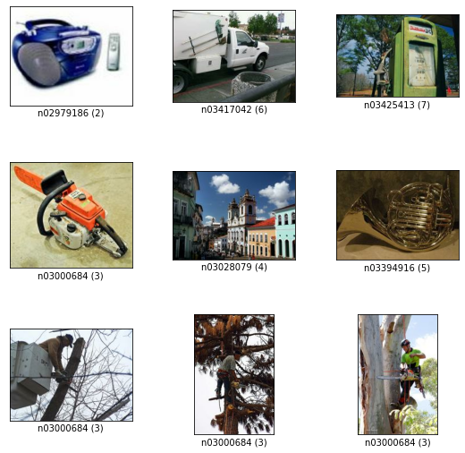

<!DOCTYPE html>

<html lang="en">
  <head>
    <meta charset="utf-8" />
    <meta name="viewport" content="width=device-width, initial-scale=1.0" /><meta name="generator" content="Docutils 0.17.1: http://docutils.sourceforge.net/" />

    <title>Quantization Aware Training with NNCF, using TensorFlow Framework &#8212; OpenVINO™  documentation</title>
    
    
  <link href="../_static/css/theme.css" rel="stylesheet">
  <link href="../_static/css/index.ff1ffe594081f20da1ef19478df9384b.css" rel="stylesheet">

    
  <link rel="stylesheet"
    href="../_static/vendor/fontawesome/5.13.0/css/all.min.css">
  <link rel="preload" as="font" type="font/woff2" crossorigin
    href="../_static/vendor/fontawesome/5.13.0/webfonts/fa-solid-900.woff2">
  <link rel="preload" as="font" type="font/woff2" crossorigin
    href="../_static/vendor/fontawesome/5.13.0/webfonts/fa-brands-400.woff2">

    
      

    
    <link rel="stylesheet" type="text/css" href="../_static/pygments.css" />
    <link rel="stylesheet" type="text/css" href="../_static/css/blank.css" />
    <link rel="stylesheet" type="text/css" href="../_static/tabs.css" />
    <link rel="stylesheet" type="text/css" href="../_static/copybutton.css" />
    <link rel="stylesheet" type="text/css" href="../_static/mystnb.css" />
    <link rel="stylesheet" type="text/css" href="../_static/togglebutton.css" />
    <link rel="stylesheet" type="text/css" href="../_static/panels-main.c949a650a448cc0ae9fd3441c0e17fb0.css" />
    <link rel="stylesheet" type="text/css" href="../_static/panels-variables.06eb56fa6e07937060861dad626602ad.css" />
    <link rel="stylesheet" type="text/css" href="../_static/doxyrest-pygments.css" />
    
  <link rel="preload" as="script" href="../_static/js/index.be7d3bbb2ef33a8344ce.js">

    <link href="../_static/css/media/favicon.ico" rel="shortcut icon">
    <link rel="stylesheet" href="../_static/css/openvino_sphinx_theme.css" type="text/css" />
    <link rel="stylesheet" href="../_static/css/button.css" type="text/css" />
    <link rel="stylesheet" href="../_static/css/input.css" type="text/css" />
    <link rel="stylesheet" href="../_static/css/textfield.css" type="text/css" />
    <link rel="stylesheet" href="../_static/css/tabs.css" type="text/css" />
    <script src="../_static/js/openvino_sphinx_theme.js"></script>
    <link rel="stylesheet" href="../_static/css/viewer.min.css" type="text/css" />
    <link rel="stylesheet" href="../_static/css/custom.css" type="text/css" />

    <script src="https://cdn.jsdelivr.net/npm/chart.js@2.9.3/dist/Chart.min.js"></script>
    <script src="https://cdn.jsdelivr.net/npm/chartjs-plugin-datalabels"></script>
    <script src="https://cdnjs.cloudflare.com/ajax/libs/chartjs-plugin-annotation/0.5.7/chartjs-plugin-annotation.min.js"></script>
    <script src="https://cdn.jsdelivr.net/npm/chartjs-plugin-barchart-background@1.3.0/build/Plugin.Barchart.Background.min.js"></script>
    <script src="https://cdn.jsdelivr.net/npm/chartjs-plugin-deferred@1"></script>
    <script src="https://cdnjs.cloudflare.com/ajax/libs/PapaParse/5.3.1/papaparse.min.js"></script>
    <script src="../_static/js/viewer.min.js"></script>
    <script src="/assets/versions_raw.js"></script>

    <script data-url_root="../" id="documentation_options" src="../_static/documentation_options.js"></script>
    <script src="../_static/jquery.js"></script>
    <script src="../_static/underscore.js"></script>
    <script src="../_static/doctools.js"></script>
    <script src="../_static/tabs.js"></script>
    <script src="../_static/clipboard.min.js"></script>
    <script src="../_static/copybutton.js"></script>
    <script src="../_static/js/custom.js"></script>
    <script src="../_static/js/graphs.js"></script>
    <script src="../_static/js/graphs_ov_tf.js"></script>
    <script>let toggleHintShow = 'Click to show';</script>
    <script>let toggleHintHide = 'Click to hide';</script>
    <script>let toggleOpenOnPrint = 'true';</script>
    <script src="../_static/togglebutton.js"></script>
    <script src="../_static/target-highlight.js"></script>
    <script>var togglebuttonSelector = '.toggle, .admonition.dropdown, .tag_hide_input div.cell_input, .tag_hide-input div.cell_input, .tag_hide_output div.cell_output, .tag_hide-output div.cell_output, .tag_hide_cell.cell, .tag_hide-cell.cell';</script>
    <link rel="canonical" href="https://docs.openvino.ai/latest/notebooks/305-tensorflow-quantization-aware-training-with-output.html" />
    <link rel="shortcut icon" href="../_static/favicon.ico"/>
    <link rel="index" title="Index" href="../genindex.html" />
    <link rel="search" title="Search" href="../search.html" />
    <link rel="next" title="Live Object Detection with OpenVINO" href="401-object-detection-with-output.html" />
    <link rel="prev" title="Quantization Aware Training with NNCF, using PyTorch framework" href="302-pytorch-quantization-aware-training-with-output.html" />
    <meta name="viewport" content="width=device-width, initial-scale=1" />
    <meta name="docsearch:language" content="en">
    

    <!-- Google Analytics -->
    
  </head>
  <body data-spy="scroll" data-target="#bd-toc-nav" data-offset="80">
    
    <div class="container-fluid" id="banner"></div>

    
      <nav class="navbar navbar-light navbar-expand-lg bg-light fixed-top bd-navbar" id="navbar-main"><div class="container-xl">

  <div id="navbar-start">
    
    

<a class="navbar-brand" href="../index.html">
  
</a>


    
  </div>

  <button class="navbar-toggler" type="button" data-toggle="collapse" data-target="#navbar-collapsible" aria-controls="navbar-collapsible" aria-expanded="false" aria-label="Toggle navigation">
    <span class="navbar-toggler-icon"></span>
  </button>

  
  <div id="navbar-collapsible" class="col-lg-9 collapse navbar-collapse">
    <div id="navbar-center" class="mr-auto">
      
      <div class="navbar-center-item">
        <ul id="navbar-main-elements" class="navbar-nav">
    <li class="toctree-l1 nav-item">
 <a class="reference internal nav-link" href="../pages/get_started.html">
  Get Started
 </a>
</li>

<li class="toctree-l1 nav-item">
 <a class="reference internal nav-link" href="../pages/documentation.html">
  Documentation
 </a>
</li>

<li class="toctree-l1 nav-item">
 <a class="reference internal nav-link" href="../tutorials.html">
  Tutorials
 </a>
</li>

<li class="toctree-l1 nav-item">
 <a class="reference internal nav-link" href="../api/api_reference.html">
  API Reference
 </a>
</li>

<li class="toctree-l1 nav-item">
 <a class="reference internal nav-link" href="../model_zoo.html">
  Model Zoo
 </a>
</li>

<li class="toctree-l1 nav-item">
 <a class="reference internal nav-link" href="../pages/resources.html">
  Resources
 </a>
</li>

    
</ul>
      </div>
      
    </div>

    <div id="navbar-end">
      
      <div class="navbar-end-item">
        <ul id="navbar-icon-links" class="navbar-nav" aria-label="Icon Links">
        <li class="nav-item">
          <a class="nav-link" href="https://github.com/openvinotoolkit/openvino" rel="noopener" target="_blank" title="GitHub">
            <span><i class="sst-github"></i></span>
            <label class="sr-only">GitHub</label>
          </a>
        </li>
</ul>
      </div>
      
      <div class="navbar-end-item">
        
<div class="dropdown sst-dropdown sst-dropdown-navbar">
  <button class="btn sst-btn dropdown-toggle" type="button" id="version-selector" data-toggle="dropdown" aria-haspopup="true" aria-expanded="false"></button>
  <div class="dropdown-menu" aria-labelledby="version-selector">
  </div>
</div>
      </div>
      
      <div class="navbar-end-item">
        

<div class="dropdown sst-dropdown sst-dropdown-navbar">
  <button class="btn sst-btn dropdown-toggle" type="button" id="language-selector" data-toggle="dropdown" aria-haspopup="true" aria-expanded="false">English</button>
  <div class="dropdown-menu" aria-labelledby="language-selector">
    
      
        <a class="dropdown-item font-weight-bold" href="/latest/notebooks/305-tensorflow-quantization-aware-training-with-output.html">English</a>
      
    
      
        <a  class="dropdown-item" href="/cn/latest/notebooks/305-tensorflow-quantization-aware-training-with-output.html">Chinese</a>
      
    
  </div>
</div>

      </div>
      
    </div>
  </div>
</div>
        <div id="collapse-nav-wrapper" class="container-xl">
          <button id="collapse-nav" class="button bttn-prm button-size-m" type="button" data-toggle="collapse" data-target="#nav-tree" aria-expanded="false" aria-controls="nav-tree">
            Documentation navigation <i class="fas fa-chevron-down"></i>
          </button>
        </div>
      </nav>
      <div class="transition-banner container-fluid alert alert-info alert-dismissible fade show" role="alert">
        <p>OpenVINO 2022.1 introduces a new version of OpenVINO API (API 2.0). For more information on the changes and transition steps, see the <a href="https://docs.openvino.ai/latest/openvino_2_0_transition_guide.html">transition guide</a></p>
        <button type="button" class="close" data-dismiss="alert" aria-label="Close">
          <span aria-hidden="true">&times;</span>
        </button>
    </div>
    

    <div class="container-xl">
      <div class="row">
          
            
            <!-- Only show if we have sidebars configured, else just a small margin  -->
            <div class="col-12 col-md-3 bd-sidebar" id="nav-tree"><form class="searchForm bd-search d-flex align-items-center" action="../search.html" method="get">
    <i class="icon fas fa-search"></i>
    <input type="search" class="form-control" name="query" id="search-input" placeholder="Search the docs ..." aria-label="Search the docs ..." autocomplete="off" >
</form><nav class="bd-links" id="bd-docs-nav" aria-label="Main navigation">
  <div class="bd-toc-item active">
    <ul class="nav bd-sidenav">
 <li class="toctree-l1">
  <a class="reference internal" href="001-hello-world-with-output.html">
   Hello Image Classification
  </a>
 </li>
 <li class="toctree-l1">
  <a class="reference internal" href="002-openvino-api-with-output.html">
   OpenVINO API Tutorial
  </a>
 </li>
 <li class="toctree-l1">
  <a class="reference internal" href="003-hello-segmentation-with-output.html">
   Hello Image Segmentation
  </a>
 </li>
 <li class="toctree-l1">
  <a class="reference internal" href="004-hello-detection-with-output.html">
   Hello Object Detection
  </a>
 </li>
</ul>
<ul class="nav bd-sidenav">
 <li class="toctree-l1">
  <a class="reference internal" href="101-tensorflow-to-openvino-with-output.html">
   Convert a TensorFlow Model to OpenVINO
  </a>
 </li>
 <li class="toctree-l1">
  <a class="reference internal" href="102-pytorch-onnx-to-openvino-with-output.html">
   Convert a PyTorch Model to ONNX and OpenVINO IR
  </a>
 </li>
 <li class="toctree-l1">
  <a class="reference internal" href="103-paddle-onnx-to-openvino-classification-with-output.html">
   Convert a PaddlePaddle Model to ONNX and OpenVINO IR
  </a>
 </li>
 <li class="toctree-l1">
  <a class="reference internal" href="104-model-tools-with-output.html">
   Working with Open Model Zoo Models
  </a>
 </li>
 <li class="toctree-l1">
  <a class="reference internal" href="105-language-quantize-bert-with-output.html">
   Quantize NLP models with OpenVINO Post-Training Optimization Tool ​
  </a>
 </li>
 <li class="toctree-l1">
  <a class="reference internal" href="106-auto-device-with-output.html">
   Automatic Device Selection with OpenVINO™
  </a>
 </li>
 <li class="toctree-l1">
  <a class="reference internal" href="110-ct-segmentation-quantize-with-output.html">
   Quantize a Segmentation Model and Show Live Inference
  </a>
 </li>
 <li class="toctree-l1">
  <a class="reference internal" href="111-detection-quantization-with-output.html">
   Object Detection Quantization
  </a>
 </li>
 <li class="toctree-l1">
  <a class="reference internal" href="112-pytorch-post-training-quantization-nncf-with-output.html">
   Post-Training Quantization of PyTorch models with NNCF
  </a>
 </li>
 <li class="toctree-l1">
  <a class="reference internal" href="113-image-classification-quantization-with-output.html">
   Quantization of Image Classification Models
  </a>
 </li>
 <li class="toctree-l1">
  <a class="reference internal" href="114-quantization-simplified-mode-with-output.html">
   INT8 Quantization with Post-training Optimization Tool (POT) in Simplified Mode tutorial
  </a>
 </li>
</ul>
<ul class="nav bd-sidenav">
 <li class="toctree-l1">
  <a class="reference internal" href="201-vision-monodepth-with-output.html">
   Monodepth Estimation with OpenVINO
  </a>
 </li>
 <li class="toctree-l1">
  <a class="reference internal" href="202-vision-superresolution-image-with-output.html">
   Single Image Super Resolution with OpenVINO
  </a>
 </li>
 <li class="toctree-l1">
  <a class="reference internal" href="202-vision-superresolution-video-with-output.html">
   Video Super Resolution with OpenVINO
  </a>
 </li>
 <li class="toctree-l1">
  <a class="reference internal" href="205-vision-background-removal-with-output.html">
   Image Background Removal with U^2-Net and OpenVINO
  </a>
 </li>
 <li class="toctree-l1">
  <a class="reference internal" href="206-vision-paddlegan-anime-with-output.html">
   Photos to Anime with PaddleGAN and OpenVINO
  </a>
 </li>
 <li class="toctree-l1">
  <a class="reference internal" href="207-vision-paddlegan-superresolution-with-output.html">
   Super Resolution with PaddleGAN and OpenVINO
  </a>
 </li>
 <li class="toctree-l1">
  <a class="reference internal" href="208-optical-character-recognition-with-output.html">
   Optical Character Recognition (OCR) with OpenVINO
  </a>
 </li>
 <li class="toctree-l1">
  <a class="reference internal" href="209-handwritten-ocr-with-output.html">
   Handwritten Chinese and Japanese OCR
  </a>
 </li>
 <li class="toctree-l1">
  <a class="reference internal" href="210-ct-scan-live-inference-with-output.html">
   Live Inference and Benchmark CT-scan Data with OpenVINO
  </a>
 </li>
 <li class="toctree-l1">
  <a class="reference internal" href="211-speech-to-text-with-output.html">
   Speech to Text with OpenVINO
  </a>
 </li>
 <li class="toctree-l1">
  <a class="reference internal" href="212-onnx-style-transfer-with-output.html">
   Style Transfer on ONNX Models with OpenVINO
  </a>
 </li>
 <li class="toctree-l1">
  <a class="reference internal" href="213-question-answering-with-output.html">
   Interactive question answering with OpenVINO
  </a>
 </li>
 <li class="toctree-l1">
  <a class="reference internal" href="214-vision-paddle-classification-with-output.html">
   PaddlePaddle Image Classification with OpenVINO
  </a>
 </li>
 <li class="toctree-l1">
  <a class="reference internal" href="215-image-inpainting-with-output.html">
   Image In-painting with OpenVINO™
  </a>
 </li>
 <li class="toctree-l1">
  <a class="reference internal" href="217-vision-deblur-with-output.html">
   Deblur Photos with DeblurGAN-v2 and OpenVINO
  </a>
 </li>
 <li class="toctree-l1">
  <a class="reference internal" href="218-vehicle-detection-and-recognition-with-output.html">
   Vehicle Detection And Recognition with OpenVINO
  </a>
 </li>
</ul>
<ul class="current nav bd-sidenav">
 <li class="toctree-l1">
  <a class="reference internal" href="301-tensorflow-training-openvino-with-output.html">
   From Training to Deployment with TensorFlow and OpenVINO
  </a>
 </li>
 <li class="toctree-l1">
  <a class="reference internal" href="301-tensorflow-training-openvino-pot-with-output.html">
   Post-Training Quantization with TensorFlow Classification Model
  </a>
 </li>
 <li class="toctree-l1">
  <a class="reference internal" href="302-pytorch-quantization-aware-training-with-output.html">
   Quantization Aware Training with NNCF, using PyTorch framework
  </a>
 </li>
 <li class="toctree-l1 current active">
  <a class="current reference internal" href="#">
   Quantization Aware Training with NNCF, using TensorFlow Framework
  </a>
 </li>
</ul>
<ul class="nav bd-sidenav">
 <li class="toctree-l1">
  <a class="reference internal" href="401-object-detection-with-output.html">
   Live Object Detection with OpenVINO
  </a>
 </li>
 <li class="toctree-l1">
  <a class="reference internal" href="402-pose-estimation-with-output.html">
   Live Human Pose Estimation with OpenVINO
  </a>
 </li>
 <li class="toctree-l1">
  <a class="reference internal" href="403-action-recognition-webcam-with-output.html">
   Human Action Recognition with OpenVINO
  </a>
 </li>
 <li class="toctree-l1">
  <a class="reference internal" href="405-paddle-ocr-webcam-with-output.html">
   PaddleOCR with OpenVINO
  </a>
 </li>
</ul>

  </div>
</nav>
            </div>
            
          

          
          <div class="d-none d-xl-block col-xl-2 bd-toc">
            
              
              <div class="toc-item">
                
<div class="tocsection onthispage pt-5 pb-3">
    <i class="fas fa-list"></i> On this page
</div>

<nav id="bd-toc-nav">
    <ul class="visible nav section-nav flex-column">
 <li class="toc-h2 nav-item toc-entry">
  <a class="reference internal nav-link" href="#imports-and-settings">
   Imports and Settings
  </a>
 </li>
 <li class="toc-h2 nav-item toc-entry">
  <a class="reference internal nav-link" href="#dataset-preprocessing">
   Dataset Preprocessing
  </a>
 </li>
 <li class="toc-h2 nav-item toc-entry">
  <a class="reference internal nav-link" href="#define-a-floating-point-model">
   Define a Floating-Point Model
  </a>
 </li>
 <li class="toc-h2 nav-item toc-entry">
  <a class="reference internal nav-link" href="#pre-train-floating-point-model">
   Pre-train Floating-Point Model
  </a>
 </li>
 <li class="toc-h2 nav-item toc-entry">
  <a class="reference internal nav-link" href="#create-and-initialize-quantization">
   Create and Initialize Quantization
  </a>
 </li>
 <li class="toc-h2 nav-item toc-entry">
  <a class="reference internal nav-link" href="#fine-tune-the-compressed-model">
   Fine-tune the Compressed Model
  </a>
 </li>
 <li class="toc-h2 nav-item toc-entry">
  <a class="reference internal nav-link" href="#export-frozen-graph-models-to-openvino-intermediate-representation-ir">
   Export Frozen Graph Models to OpenVINO Intermediate Representation (IR)
  </a>
 </li>
 <li class="toc-h2 nav-item toc-entry">
  <a class="reference internal nav-link" href="#benchmark-model-performance-by-computing-inference-time">
   Benchmark Model Performance by Computing Inference Time
  </a>
 </li>
</ul>

</nav>
              </div>
              
              <div class="toc-item">
                <div class="tocsection download-docs">
  <div class="dropdown sst-dropdown">
    <button class="button bttn-prm button-size-m" data-display="static" type="button" id="download-options"
      data-toggle="dropdown" aria-haspopup="true" aria-expanded="false">
      Download Docs
    </button>
    <div class="dropdown-menu" aria-labelledby="download-options">
      <a class="dropdown-item" href="#" onclick="window.print()">.pdf</a>
      <a id="download-zip-btn" class="dropdown-item" href="#">.zip</a>
    </div>
  </div>
</div>
              </div>
              
            
          </div>
          

          
          
              
          
          <main class="col-12 col-md-9 col-xl-7 py-md-5 pl-md-5 pr-md-4 bd-content" role="main">

<div class="tocsection editthispage">
    <a href="None">
        <i class="fas fa-pencil-alt"></i> Edit this page
    </a>
</div>

            
                <div>
                  
  <section id="quantization-aware-training-with-nncf-using-tensorflow-framework">
<h1>Quantization Aware Training with NNCF, using TensorFlow Framework<a class="headerlink" href="#quantization-aware-training-with-nncf-using-tensorflow-framework" title="Permalink to this headline">¶</a></h1>
<p>The goal of this notebook to demonstrate how to use the Neural Network
Compression Framework <a class="reference external" href="https://github.com/openvinotoolkit/nncf">NNCF</a>
8-bit quantization to optimize a TensorFlow model for inference with
OpenVINO Toolkit. The optimization process contains the following steps:
* Transform the original FP32 model to INT8 * Use fine-tuning to
restore the accuracy * Export optimized and original models to Frozen
Graph and then to OpenVINO * Measure and compare the performance of
models</p>
<p>For more advanced usage, please refer to these
<a class="reference external" href="https://github.com/openvinotoolkit/nncf/tree/develop/examples">examples</a>.</p>
<p>We selected the ResNet-18 model with Imagenette dataset. Imagenette is a
subset of 10 easily classified classes from the Imagenet dataset. Using
the smaller model and dataset will speed up training and download time.</p>
<section id="imports-and-settings">
<h2>Imports and Settings<a class="headerlink" href="#imports-and-settings" title="Permalink to this headline">¶</a></h2>
<p>Import NNCF and all auxiliary packages from your Python code. Set a name
for the model, input image size, used batch size, and the learning rate.
Also define paths where Frozen Graph and OpenVINO IR versions of the
models will be stored.</p>
<blockquote>
<div><p>NOTE: All NNCF logging messages below ERROR level (INFO and WARNING)
are disabled to simplify the tutorial. For production use, it is
recommended to enable logging, by removing
<code class="docutils literal notranslate"><span class="pre">set_log_level(logging.ERROR)</span></code>.</p>
</div></blockquote>
<div class="highlight-ipython3 notranslate"><div class="highlight"><pre><span></span><span class="kn">from</span> <span class="nn">pathlib</span> <span class="kn">import</span> <span class="n">Path</span>
<span class="kn">import</span> <span class="nn">logging</span>

<span class="kn">import</span> <span class="nn">tensorflow</span> <span class="k">as</span> <span class="nn">tf</span>
<span class="kn">import</span> <span class="nn">tensorflow_datasets</span> <span class="k">as</span> <span class="nn">tfds</span>
<span class="kn">from</span> <span class="nn">tensorflow.python.keras</span> <span class="kn">import</span> <span class="n">layers</span>
<span class="kn">from</span> <span class="nn">tensorflow.python.keras</span> <span class="kn">import</span> <span class="n">models</span>

<span class="kn">from</span> <span class="nn">nncf</span> <span class="kn">import</span> <span class="n">NNCFConfig</span>
<span class="kn">from</span> <span class="nn">nncf.tensorflow.helpers.model_creation</span> <span class="kn">import</span> <span class="n">create_compressed_model</span>
<span class="kn">from</span> <span class="nn">nncf.tensorflow.initialization</span> <span class="kn">import</span> <span class="n">register_default_init_args</span>
<span class="kn">from</span> <span class="nn">nncf.common.utils.logger</span> <span class="kn">import</span> <span class="n">set_log_level</span>

<span class="n">set_log_level</span><span class="p">(</span><span class="n">logging</span><span class="o">.</span><span class="n">ERROR</span><span class="p">)</span>

<span class="n">MODEL_DIR</span> <span class="o">=</span> <span class="n">Path</span><span class="p">(</span><span class="s2">&quot;model&quot;</span><span class="p">)</span>
<span class="n">OUTPUT_DIR</span> <span class="o">=</span> <span class="n">Path</span><span class="p">(</span><span class="s2">&quot;output&quot;</span><span class="p">)</span>
<span class="n">MODEL_DIR</span><span class="o">.</span><span class="n">mkdir</span><span class="p">(</span><span class="n">exist_ok</span><span class="o">=</span><span class="kc">True</span><span class="p">)</span>
<span class="n">OUTPUT_DIR</span><span class="o">.</span><span class="n">mkdir</span><span class="p">(</span><span class="n">exist_ok</span><span class="o">=</span><span class="kc">True</span><span class="p">)</span>

<span class="n">BASE_MODEL_NAME</span> <span class="o">=</span> <span class="s2">&quot;ResNet-18&quot;</span>

<span class="n">fp32_h5_path</span> <span class="o">=</span> <span class="n">Path</span><span class="p">(</span><span class="n">MODEL_DIR</span> <span class="o">/</span> <span class="p">(</span><span class="n">BASE_MODEL_NAME</span> <span class="o">+</span> <span class="s2">&quot;_fp32&quot;</span><span class="p">))</span><span class="o">.</span><span class="n">with_suffix</span><span class="p">(</span><span class="s2">&quot;.h5&quot;</span><span class="p">)</span>
<span class="n">fp32_sm_path</span> <span class="o">=</span> <span class="n">Path</span><span class="p">(</span><span class="n">OUTPUT_DIR</span> <span class="o">/</span> <span class="p">(</span><span class="n">BASE_MODEL_NAME</span> <span class="o">+</span> <span class="s2">&quot;_fp32&quot;</span><span class="p">))</span>
<span class="n">fp32_ir_path</span> <span class="o">=</span> <span class="n">Path</span><span class="p">(</span><span class="n">OUTPUT_DIR</span> <span class="o">/</span> <span class="s2">&quot;saved_model&quot;</span><span class="p">)</span><span class="o">.</span><span class="n">with_suffix</span><span class="p">(</span><span class="s2">&quot;.xml&quot;</span><span class="p">)</span>
<span class="n">int8_pb_path</span> <span class="o">=</span> <span class="n">Path</span><span class="p">(</span><span class="n">OUTPUT_DIR</span> <span class="o">/</span> <span class="p">(</span><span class="n">BASE_MODEL_NAME</span> <span class="o">+</span> <span class="s2">&quot;_int8&quot;</span><span class="p">))</span><span class="o">.</span><span class="n">with_suffix</span><span class="p">(</span><span class="s2">&quot;.pb&quot;</span><span class="p">)</span>
<span class="n">int8_pb_name</span> <span class="o">=</span> <span class="n">Path</span><span class="p">(</span><span class="n">BASE_MODEL_NAME</span> <span class="o">+</span> <span class="s2">&quot;_int8&quot;</span><span class="p">)</span><span class="o">.</span><span class="n">with_suffix</span><span class="p">(</span><span class="s2">&quot;.pb&quot;</span><span class="p">)</span>
<span class="n">int8_ir_path</span> <span class="o">=</span> <span class="n">int8_pb_path</span><span class="o">.</span><span class="n">with_suffix</span><span class="p">(</span><span class="s2">&quot;.xml&quot;</span><span class="p">)</span>

<span class="n">BATCH_SIZE</span> <span class="o">=</span> <span class="mi">128</span>
<span class="n">IMG_SIZE</span> <span class="o">=</span> <span class="p">(</span><span class="mi">64</span><span class="p">,</span> <span class="mi">64</span><span class="p">)</span>  <span class="c1"># Default Imagenet image size</span>
<span class="n">NUM_CLASSES</span> <span class="o">=</span> <span class="mi">10</span>  <span class="c1"># For Imagenette dataset</span>

<span class="n">LR</span> <span class="o">=</span> <span class="mf">1e-5</span>

<span class="n">MEAN_RGB</span> <span class="o">=</span> <span class="p">(</span><span class="mf">0.485</span> <span class="o">*</span> <span class="mi">255</span><span class="p">,</span> <span class="mf">0.456</span> <span class="o">*</span> <span class="mi">255</span><span class="p">,</span> <span class="mf">0.406</span> <span class="o">*</span> <span class="mi">255</span><span class="p">)</span>  <span class="c1"># From Imagenet dataset</span>
<span class="n">STDDEV_RGB</span> <span class="o">=</span> <span class="p">(</span><span class="mf">0.229</span> <span class="o">*</span> <span class="mi">255</span><span class="p">,</span> <span class="mf">0.224</span> <span class="o">*</span> <span class="mi">255</span><span class="p">,</span> <span class="mf">0.225</span> <span class="o">*</span> <span class="mi">255</span><span class="p">)</span>  <span class="c1"># From Imagenet dataset</span>

<span class="n">fp32_pth_url</span> <span class="o">=</span> <span class="s2">&quot;https://storage.openvinotoolkit.org/repositories/nncf/openvino_notebook_ckpts/305_resnet18_imagenette_fp32_v1.h5&quot;</span>
<span class="n">_</span> <span class="o">=</span> <span class="n">tf</span><span class="o">.</span><span class="n">keras</span><span class="o">.</span><span class="n">utils</span><span class="o">.</span><span class="n">get_file</span><span class="p">(</span><span class="n">fp32_h5_path</span><span class="o">.</span><span class="n">resolve</span><span class="p">(),</span> <span class="n">fp32_pth_url</span><span class="p">)</span>
<span class="nb">print</span><span class="p">(</span><span class="sa">f</span><span class="s1">&#39;Absolute path where the model weights are saved:</span><span class="se">\n</span><span class="s1"> </span><span class="si">{</span><span class="n">fp32_h5_path</span><span class="o">.</span><span class="n">resolve</span><span class="p">()</span><span class="si">}</span><span class="s1">&#39;</span><span class="p">)</span>
</pre></div>
</div>
<div class="highlight-default notranslate"><div class="highlight"><pre><span></span><span class="n">Downloading</span> <span class="n">data</span> <span class="kn">from</span> <span class="nn">https</span><span class="p">:</span><span class="o">//</span><span class="n">storage</span><span class="o">.</span><span class="n">openvinotoolkit</span><span class="o">.</span><span class="n">org</span><span class="o">/</span><span class="n">repositories</span><span class="o">/</span><span class="n">nncf</span><span class="o">/</span><span class="n">openvino_notebook_ckpts</span><span class="o">/</span><span class="mi">305</span><span class="n">_resnet18_imagenette_fp32_v1</span><span class="o">.</span><span class="n">h5</span>
<span class="mi">134610944</span><span class="o">/</span><span class="mi">134604992</span> <span class="p">[</span><span class="o">==============================</span><span class="p">]</span> <span class="o">-</span> <span class="mi">3</span><span class="n">s</span> <span class="mi">0</span><span class="n">us</span><span class="o">/</span><span class="n">step</span>
<span class="n">Absolute</span> <span class="n">path</span> <span class="n">where</span> <span class="n">the</span> <span class="n">model</span> <span class="n">weights</span> <span class="n">are</span> <span class="n">saved</span><span class="p">:</span>
 <span class="o">/</span><span class="n">home</span><span class="o">/</span><span class="n">runner</span><span class="o">/</span><span class="n">work</span><span class="o">/</span><span class="n">openvino_notebooks</span><span class="o">/</span><span class="n">openvino_notebooks</span><span class="o">/</span><span class="n">notebooks</span><span class="o">/</span><span class="mi">305</span><span class="o">-</span><span class="n">tensorflow</span><span class="o">-</span><span class="n">quantization</span><span class="o">-</span><span class="n">aware</span><span class="o">-</span><span class="n">training</span><span class="o">/</span><span class="n">model</span><span class="o">/</span><span class="n">ResNet</span><span class="o">-</span><span class="mi">18</span><span class="n">_fp32</span><span class="o">.</span><span class="n">h5</span>
</pre></div>
</div>
</section>
<section id="dataset-preprocessing">
<h2>Dataset Preprocessing<a class="headerlink" href="#dataset-preprocessing" title="Permalink to this headline">¶</a></h2>
<p>Download and prepare Imagenette 160px dataset. - Number of classes: 10 -
Download size: 94.18 MiB | Split | Examples | |————–<a href="#id1"><span class="problematic" id="id2">|</span></a>———-| |
‘train’ | 12,894 | | ‘validation’ | 500 |</p>
<div class="highlight-ipython3 notranslate"><div class="highlight"><pre><span></span><span class="n">datasets</span><span class="p">,</span> <span class="n">datasets_info</span> <span class="o">=</span> <span class="n">tfds</span><span class="o">.</span><span class="n">load</span><span class="p">(</span><span class="s1">&#39;imagenette/160px&#39;</span><span class="p">,</span> <span class="n">shuffle_files</span><span class="o">=</span><span class="kc">True</span><span class="p">,</span> <span class="n">as_supervised</span><span class="o">=</span><span class="kc">True</span><span class="p">,</span> <span class="n">with_info</span><span class="o">=</span><span class="kc">True</span><span class="p">,</span>
                                    <span class="n">read_config</span><span class="o">=</span><span class="n">tfds</span><span class="o">.</span><span class="n">ReadConfig</span><span class="p">(</span><span class="n">shuffle_seed</span><span class="o">=</span><span class="mi">0</span><span class="p">))</span>
<span class="n">train_dataset</span><span class="p">,</span> <span class="n">validation_dataset</span> <span class="o">=</span> <span class="n">datasets</span><span class="p">[</span><span class="s1">&#39;train&#39;</span><span class="p">],</span> <span class="n">datasets</span><span class="p">[</span><span class="s1">&#39;validation&#39;</span><span class="p">]</span>
<span class="n">fig</span> <span class="o">=</span> <span class="n">tfds</span><span class="o">.</span><span class="n">show_examples</span><span class="p">(</span><span class="n">train_dataset</span><span class="p">,</span> <span class="n">datasets_info</span><span class="p">)</span>
</pre></div>
</div>
<div class="highlight-default notranslate"><div class="highlight"><pre><span></span>Downloading and preparing dataset 94.18 MiB (download: 94.18 MiB, generated: Unknown size, total: 94.18 MiB) to /home/runner/tensorflow_datasets/imagenette/160px/0.1.0...
</pre></div>
</div>
<div class="highlight-default notranslate"><div class="highlight"><pre><span></span>Dl Completed...: 0 url [00:00, ? url/s]
</pre></div>
</div>
<div class="highlight-default notranslate"><div class="highlight"><pre><span></span>Dl Size...: 0 MiB [00:00, ? MiB/s]
</pre></div>
</div>
<div class="highlight-default notranslate"><div class="highlight"><pre><span></span>Extraction completed...: 0 file [00:00, ? file/s]
</pre></div>
</div>
<div class="highlight-default notranslate"><div class="highlight"><pre><span></span>Generating splits...:   0%|          | 0/2 [00:00&lt;?, ? splits/s]
</pre></div>
</div>
<div class="highlight-default notranslate"><div class="highlight"><pre><span></span>Generating train examples...:   0%|          | 0/12894 [00:00&lt;?, ? examples/s]
</pre></div>
</div>
<div class="highlight-default notranslate"><div class="highlight"><pre><span></span>Shuffling imagenette-train.tfrecord...:   0%|          | 0/12894 [00:00&lt;?, ? examples/s]
</pre></div>
</div>
<div class="highlight-default notranslate"><div class="highlight"><pre><span></span>Generating validation examples...:   0%|          | 0/500 [00:00&lt;?, ? examples/s]
</pre></div>
</div>
<div class="highlight-default notranslate"><div class="highlight"><pre><span></span>Shuffling imagenette-validation.tfrecord...:   0%|          | 0/500 [00:00&lt;?, ? examples/s]
</pre></div>
</div>
<div class="highlight-default notranslate"><div class="highlight"><pre><span></span>Dataset imagenette downloaded and prepared to /home/runner/tensorflow_datasets/imagenette/160px/0.1.0. Subsequent calls will reuse this data.
</pre></div>
</div>

<div class="highlight-ipython3 notranslate"><div class="highlight"><pre><span></span><span class="k">def</span> <span class="nf">preprocessing</span><span class="p">(</span><span class="n">image</span><span class="p">,</span> <span class="n">label</span><span class="p">):</span>
    <span class="n">image</span> <span class="o">=</span> <span class="n">tf</span><span class="o">.</span><span class="n">image</span><span class="o">.</span><span class="n">resize</span><span class="p">(</span><span class="n">image</span><span class="p">,</span> <span class="n">IMG_SIZE</span><span class="p">)</span>
    <span class="n">image</span> <span class="o">=</span> <span class="n">image</span> <span class="o">-</span> <span class="n">MEAN_RGB</span>
    <span class="n">image</span> <span class="o">=</span> <span class="n">image</span> <span class="o">/</span> <span class="n">STDDEV_RGB</span>
    <span class="n">label</span> <span class="o">=</span> <span class="n">tf</span><span class="o">.</span><span class="n">one_hot</span><span class="p">(</span><span class="n">label</span><span class="p">,</span> <span class="n">NUM_CLASSES</span><span class="p">)</span>
    <span class="k">return</span> <span class="n">image</span><span class="p">,</span> <span class="n">label</span>


<span class="n">train_dataset</span> <span class="o">=</span> <span class="p">(</span><span class="n">train_dataset</span><span class="o">.</span><span class="n">map</span><span class="p">(</span><span class="n">preprocessing</span><span class="p">,</span> <span class="n">num_parallel_calls</span><span class="o">=</span><span class="n">tf</span><span class="o">.</span><span class="n">data</span><span class="o">.</span><span class="n">experimental</span><span class="o">.</span><span class="n">AUTOTUNE</span><span class="p">)</span>
                              <span class="o">.</span><span class="n">batch</span><span class="p">(</span><span class="n">BATCH_SIZE</span><span class="p">)</span>
                              <span class="o">.</span><span class="n">prefetch</span><span class="p">(</span><span class="n">tf</span><span class="o">.</span><span class="n">data</span><span class="o">.</span><span class="n">experimental</span><span class="o">.</span><span class="n">AUTOTUNE</span><span class="p">))</span>

<span class="n">validation_dataset</span> <span class="o">=</span> <span class="p">(</span><span class="n">validation_dataset</span><span class="o">.</span><span class="n">map</span><span class="p">(</span><span class="n">preprocessing</span><span class="p">,</span> <span class="n">num_parallel_calls</span><span class="o">=</span><span class="n">tf</span><span class="o">.</span><span class="n">data</span><span class="o">.</span><span class="n">experimental</span><span class="o">.</span><span class="n">AUTOTUNE</span><span class="p">)</span>
                                        <span class="o">.</span><span class="n">batch</span><span class="p">(</span><span class="n">BATCH_SIZE</span><span class="p">)</span>
                                        <span class="o">.</span><span class="n">prefetch</span><span class="p">(</span><span class="n">tf</span><span class="o">.</span><span class="n">data</span><span class="o">.</span><span class="n">experimental</span><span class="o">.</span><span class="n">AUTOTUNE</span><span class="p">))</span>
</pre></div>
</div>
</section>
<section id="define-a-floating-point-model">
<h2>Define a Floating-Point Model<a class="headerlink" href="#define-a-floating-point-model" title="Permalink to this headline">¶</a></h2>
<div class="highlight-ipython3 notranslate"><div class="highlight"><pre><span></span><span class="k">def</span> <span class="nf">residual_conv_block</span><span class="p">(</span><span class="n">filters</span><span class="p">,</span> <span class="n">stage</span><span class="p">,</span> <span class="n">block</span><span class="p">,</span> <span class="n">strides</span><span class="o">=</span><span class="p">(</span><span class="mi">1</span><span class="p">,</span> <span class="mi">1</span><span class="p">),</span> <span class="n">cut</span><span class="o">=</span><span class="s1">&#39;pre&#39;</span><span class="p">):</span>
    <span class="k">def</span> <span class="nf">layer</span><span class="p">(</span><span class="n">input_tensor</span><span class="p">):</span>
        <span class="n">x</span> <span class="o">=</span> <span class="n">layers</span><span class="o">.</span><span class="n">BatchNormalization</span><span class="p">(</span><span class="n">epsilon</span><span class="o">=</span><span class="mf">2e-5</span><span class="p">)(</span><span class="n">input_tensor</span><span class="p">)</span>
        <span class="n">x</span> <span class="o">=</span> <span class="n">layers</span><span class="o">.</span><span class="n">Activation</span><span class="p">(</span><span class="s1">&#39;relu&#39;</span><span class="p">)(</span><span class="n">x</span><span class="p">)</span>

        <span class="c1"># defining shortcut connection</span>
        <span class="k">if</span> <span class="n">cut</span> <span class="o">==</span> <span class="s1">&#39;pre&#39;</span><span class="p">:</span>
            <span class="n">shortcut</span> <span class="o">=</span> <span class="n">input_tensor</span>
        <span class="k">elif</span> <span class="n">cut</span> <span class="o">==</span> <span class="s1">&#39;post&#39;</span><span class="p">:</span>
            <span class="n">shortcut</span> <span class="o">=</span> <span class="n">layers</span><span class="o">.</span><span class="n">Conv2D</span><span class="p">(</span><span class="n">filters</span><span class="p">,</span> <span class="p">(</span><span class="mi">1</span><span class="p">,</span> <span class="mi">1</span><span class="p">),</span> <span class="n">strides</span><span class="o">=</span><span class="n">strides</span><span class="p">,</span> <span class="n">kernel_initializer</span><span class="o">=</span><span class="s1">&#39;he_uniform&#39;</span><span class="p">,</span>
                                     <span class="n">use_bias</span><span class="o">=</span><span class="kc">False</span><span class="p">)(</span><span class="n">x</span><span class="p">)</span>

        <span class="c1"># continue with convolution layers</span>
        <span class="n">x</span> <span class="o">=</span> <span class="n">layers</span><span class="o">.</span><span class="n">ZeroPadding2D</span><span class="p">(</span><span class="n">padding</span><span class="o">=</span><span class="p">(</span><span class="mi">1</span><span class="p">,</span> <span class="mi">1</span><span class="p">))(</span><span class="n">x</span><span class="p">)</span>
        <span class="n">x</span> <span class="o">=</span> <span class="n">layers</span><span class="o">.</span><span class="n">Conv2D</span><span class="p">(</span><span class="n">filters</span><span class="p">,</span> <span class="p">(</span><span class="mi">3</span><span class="p">,</span> <span class="mi">3</span><span class="p">),</span> <span class="n">strides</span><span class="o">=</span><span class="n">strides</span><span class="p">,</span> <span class="n">kernel_initializer</span><span class="o">=</span><span class="s1">&#39;he_uniform&#39;</span><span class="p">,</span> <span class="n">use_bias</span><span class="o">=</span><span class="kc">False</span><span class="p">)(</span><span class="n">x</span><span class="p">)</span>

        <span class="n">x</span> <span class="o">=</span> <span class="n">layers</span><span class="o">.</span><span class="n">BatchNormalization</span><span class="p">(</span><span class="n">epsilon</span><span class="o">=</span><span class="mf">2e-5</span><span class="p">)(</span><span class="n">x</span><span class="p">)</span>
        <span class="n">x</span> <span class="o">=</span> <span class="n">layers</span><span class="o">.</span><span class="n">Activation</span><span class="p">(</span><span class="s1">&#39;relu&#39;</span><span class="p">)(</span><span class="n">x</span><span class="p">)</span>
        <span class="n">x</span> <span class="o">=</span> <span class="n">layers</span><span class="o">.</span><span class="n">ZeroPadding2D</span><span class="p">(</span><span class="n">padding</span><span class="o">=</span><span class="p">(</span><span class="mi">1</span><span class="p">,</span> <span class="mi">1</span><span class="p">))(</span><span class="n">x</span><span class="p">)</span>
        <span class="n">x</span> <span class="o">=</span> <span class="n">layers</span><span class="o">.</span><span class="n">Conv2D</span><span class="p">(</span><span class="n">filters</span><span class="p">,</span> <span class="p">(</span><span class="mi">3</span><span class="p">,</span> <span class="mi">3</span><span class="p">),</span> <span class="n">kernel_initializer</span><span class="o">=</span><span class="s1">&#39;he_uniform&#39;</span><span class="p">,</span> <span class="n">use_bias</span><span class="o">=</span><span class="kc">False</span><span class="p">)(</span><span class="n">x</span><span class="p">)</span>

        <span class="c1"># add residual connection</span>
        <span class="n">x</span> <span class="o">=</span> <span class="n">layers</span><span class="o">.</span><span class="n">Add</span><span class="p">()([</span><span class="n">x</span><span class="p">,</span> <span class="n">shortcut</span><span class="p">])</span>
        <span class="k">return</span> <span class="n">x</span>

    <span class="k">return</span> <span class="n">layer</span>


<span class="k">def</span> <span class="nf">ResNet18</span><span class="p">(</span><span class="n">input_shape</span><span class="o">=</span><span class="kc">None</span><span class="p">):</span>
    <span class="sd">&quot;&quot;&quot;Instantiates the ResNet18 architecture.&quot;&quot;&quot;</span>
    <span class="n">img_input</span> <span class="o">=</span> <span class="n">layers</span><span class="o">.</span><span class="n">Input</span><span class="p">(</span><span class="n">shape</span><span class="o">=</span><span class="n">input_shape</span><span class="p">,</span> <span class="n">name</span><span class="o">=</span><span class="s1">&#39;data&#39;</span><span class="p">)</span>

    <span class="c1"># ResNet18 bottom</span>
    <span class="n">x</span> <span class="o">=</span> <span class="n">layers</span><span class="o">.</span><span class="n">BatchNormalization</span><span class="p">(</span><span class="n">epsilon</span><span class="o">=</span><span class="mf">2e-5</span><span class="p">,</span> <span class="n">scale</span><span class="o">=</span><span class="kc">False</span><span class="p">)(</span><span class="n">img_input</span><span class="p">)</span>
    <span class="n">x</span> <span class="o">=</span> <span class="n">layers</span><span class="o">.</span><span class="n">ZeroPadding2D</span><span class="p">(</span><span class="n">padding</span><span class="o">=</span><span class="p">(</span><span class="mi">3</span><span class="p">,</span> <span class="mi">3</span><span class="p">))(</span><span class="n">x</span><span class="p">)</span>
    <span class="n">x</span> <span class="o">=</span> <span class="n">layers</span><span class="o">.</span><span class="n">Conv2D</span><span class="p">(</span><span class="mi">64</span><span class="p">,</span> <span class="p">(</span><span class="mi">7</span><span class="p">,</span> <span class="mi">7</span><span class="p">),</span> <span class="n">strides</span><span class="o">=</span><span class="p">(</span><span class="mi">2</span><span class="p">,</span> <span class="mi">2</span><span class="p">),</span> <span class="n">kernel_initializer</span><span class="o">=</span><span class="s1">&#39;he_uniform&#39;</span><span class="p">,</span> <span class="n">use_bias</span><span class="o">=</span><span class="kc">False</span><span class="p">)(</span><span class="n">x</span><span class="p">)</span>
    <span class="n">x</span> <span class="o">=</span> <span class="n">layers</span><span class="o">.</span><span class="n">BatchNormalization</span><span class="p">(</span><span class="n">epsilon</span><span class="o">=</span><span class="mf">2e-5</span><span class="p">)(</span><span class="n">x</span><span class="p">)</span>
    <span class="n">x</span> <span class="o">=</span> <span class="n">layers</span><span class="o">.</span><span class="n">Activation</span><span class="p">(</span><span class="s1">&#39;relu&#39;</span><span class="p">)(</span><span class="n">x</span><span class="p">)</span>
    <span class="n">x</span> <span class="o">=</span> <span class="n">layers</span><span class="o">.</span><span class="n">ZeroPadding2D</span><span class="p">(</span><span class="n">padding</span><span class="o">=</span><span class="p">(</span><span class="mi">1</span><span class="p">,</span> <span class="mi">1</span><span class="p">))(</span><span class="n">x</span><span class="p">)</span>
    <span class="n">x</span> <span class="o">=</span> <span class="n">layers</span><span class="o">.</span><span class="n">MaxPooling2D</span><span class="p">((</span><span class="mi">3</span><span class="p">,</span> <span class="mi">3</span><span class="p">),</span> <span class="n">strides</span><span class="o">=</span><span class="p">(</span><span class="mi">2</span><span class="p">,</span> <span class="mi">2</span><span class="p">),</span> <span class="n">padding</span><span class="o">=</span><span class="s1">&#39;valid&#39;</span><span class="p">)(</span><span class="n">x</span><span class="p">)</span>

    <span class="c1"># ResNet18 body</span>
    <span class="n">repetitions</span> <span class="o">=</span> <span class="p">(</span><span class="mi">2</span><span class="p">,</span> <span class="mi">2</span><span class="p">,</span> <span class="mi">2</span><span class="p">,</span> <span class="mi">2</span><span class="p">)</span>
    <span class="k">for</span> <span class="n">stage</span><span class="p">,</span> <span class="n">rep</span> <span class="ow">in</span> <span class="nb">enumerate</span><span class="p">(</span><span class="n">repetitions</span><span class="p">):</span>
        <span class="k">for</span> <span class="n">block</span> <span class="ow">in</span> <span class="nb">range</span><span class="p">(</span><span class="n">rep</span><span class="p">):</span>
            <span class="n">filters</span> <span class="o">=</span> <span class="mi">64</span> <span class="o">*</span> <span class="p">(</span><span class="mi">2</span> <span class="o">**</span> <span class="n">stage</span><span class="p">)</span>
            <span class="k">if</span> <span class="n">block</span> <span class="o">==</span> <span class="mi">0</span> <span class="ow">and</span> <span class="n">stage</span> <span class="o">==</span> <span class="mi">0</span><span class="p">:</span>
                <span class="n">x</span> <span class="o">=</span> <span class="n">residual_conv_block</span><span class="p">(</span><span class="n">filters</span><span class="p">,</span> <span class="n">stage</span><span class="p">,</span> <span class="n">block</span><span class="p">,</span> <span class="n">strides</span><span class="o">=</span><span class="p">(</span><span class="mi">1</span><span class="p">,</span> <span class="mi">1</span><span class="p">),</span> <span class="n">cut</span><span class="o">=</span><span class="s1">&#39;post&#39;</span><span class="p">)(</span><span class="n">x</span><span class="p">)</span>
            <span class="k">elif</span> <span class="n">block</span> <span class="o">==</span> <span class="mi">0</span><span class="p">:</span>
                <span class="n">x</span> <span class="o">=</span> <span class="n">residual_conv_block</span><span class="p">(</span><span class="n">filters</span><span class="p">,</span> <span class="n">stage</span><span class="p">,</span> <span class="n">block</span><span class="p">,</span> <span class="n">strides</span><span class="o">=</span><span class="p">(</span><span class="mi">2</span><span class="p">,</span> <span class="mi">2</span><span class="p">),</span> <span class="n">cut</span><span class="o">=</span><span class="s1">&#39;post&#39;</span><span class="p">)(</span><span class="n">x</span><span class="p">)</span>
            <span class="k">else</span><span class="p">:</span>
                <span class="n">x</span> <span class="o">=</span> <span class="n">residual_conv_block</span><span class="p">(</span><span class="n">filters</span><span class="p">,</span> <span class="n">stage</span><span class="p">,</span> <span class="n">block</span><span class="p">,</span> <span class="n">strides</span><span class="o">=</span><span class="p">(</span><span class="mi">1</span><span class="p">,</span> <span class="mi">1</span><span class="p">),</span> <span class="n">cut</span><span class="o">=</span><span class="s1">&#39;pre&#39;</span><span class="p">)(</span><span class="n">x</span><span class="p">)</span>
    <span class="n">x</span> <span class="o">=</span> <span class="n">layers</span><span class="o">.</span><span class="n">BatchNormalization</span><span class="p">(</span><span class="n">epsilon</span><span class="o">=</span><span class="mf">2e-5</span><span class="p">)(</span><span class="n">x</span><span class="p">)</span>
    <span class="n">x</span> <span class="o">=</span> <span class="n">layers</span><span class="o">.</span><span class="n">Activation</span><span class="p">(</span><span class="s1">&#39;relu&#39;</span><span class="p">)(</span><span class="n">x</span><span class="p">)</span>

    <span class="c1"># ResNet18 top</span>
    <span class="n">x</span> <span class="o">=</span> <span class="n">layers</span><span class="o">.</span><span class="n">GlobalAveragePooling2D</span><span class="p">()(</span><span class="n">x</span><span class="p">)</span>
    <span class="n">x</span> <span class="o">=</span> <span class="n">layers</span><span class="o">.</span><span class="n">Dense</span><span class="p">(</span><span class="n">NUM_CLASSES</span><span class="p">)(</span><span class="n">x</span><span class="p">)</span>
    <span class="n">x</span> <span class="o">=</span> <span class="n">layers</span><span class="o">.</span><span class="n">Activation</span><span class="p">(</span><span class="s1">&#39;softmax&#39;</span><span class="p">)(</span><span class="n">x</span><span class="p">)</span>

    <span class="c1"># Create model</span>
    <span class="n">model</span> <span class="o">=</span> <span class="n">models</span><span class="o">.</span><span class="n">Model</span><span class="p">(</span><span class="n">img_input</span><span class="p">,</span> <span class="n">x</span><span class="p">)</span>

    <span class="k">return</span> <span class="n">model</span>
</pre></div>
</div>
<div class="highlight-ipython3 notranslate"><div class="highlight"><pre><span></span><span class="n">IMG_SHAPE</span> <span class="o">=</span> <span class="n">IMG_SIZE</span> <span class="o">+</span> <span class="p">(</span><span class="mi">3</span><span class="p">,)</span>
<span class="n">model</span> <span class="o">=</span> <span class="n">ResNet18</span><span class="p">(</span><span class="n">input_shape</span><span class="o">=</span><span class="n">IMG_SHAPE</span><span class="p">)</span>
</pre></div>
</div>
</section>
<section id="pre-train-floating-point-model">
<h2>Pre-train Floating-Point Model<a class="headerlink" href="#pre-train-floating-point-model" title="Permalink to this headline">¶</a></h2>
<p>Using NNCF for model compression assumes that the user has a pre-trained
model and a training pipeline.</p>
<blockquote>
<div><p><strong>NOTE</strong> For the sake of simplicity of the tutorial, we propose to
skip FP32 model training and load the weights that are provided.</p>
</div></blockquote>
<div class="highlight-ipython3 notranslate"><div class="highlight"><pre><span></span><span class="c1"># Load the floating-point weights</span>
<span class="n">model</span><span class="o">.</span><span class="n">load_weights</span><span class="p">(</span><span class="n">fp32_h5_path</span><span class="p">)</span>

<span class="c1"># Compile the floating-point model</span>
<span class="n">model</span><span class="o">.</span><span class="n">compile</span><span class="p">(</span><span class="n">loss</span><span class="o">=</span><span class="n">tf</span><span class="o">.</span><span class="n">keras</span><span class="o">.</span><span class="n">losses</span><span class="o">.</span><span class="n">CategoricalCrossentropy</span><span class="p">(</span><span class="n">label_smoothing</span><span class="o">=</span><span class="mf">0.1</span><span class="p">),</span>
              <span class="n">metrics</span><span class="o">=</span><span class="p">[</span><span class="n">tf</span><span class="o">.</span><span class="n">keras</span><span class="o">.</span><span class="n">metrics</span><span class="o">.</span><span class="n">CategoricalAccuracy</span><span class="p">(</span><span class="n">name</span><span class="o">=</span><span class="s1">&#39;acc@1&#39;</span><span class="p">)])</span>

<span class="c1"># Validate the floating-point model</span>
<span class="n">test_loss</span><span class="p">,</span> <span class="n">acc_fp32</span> <span class="o">=</span> <span class="n">model</span><span class="o">.</span><span class="n">evaluate</span><span class="p">(</span><span class="n">validation_dataset</span><span class="p">,</span>
                                     <span class="n">callbacks</span><span class="o">=</span><span class="n">tf</span><span class="o">.</span><span class="n">keras</span><span class="o">.</span><span class="n">callbacks</span><span class="o">.</span><span class="n">ProgbarLogger</span><span class="p">(</span><span class="n">stateful_metrics</span><span class="o">=</span><span class="p">[</span><span class="s1">&#39;acc@1&#39;</span><span class="p">]))</span>
<span class="nb">print</span><span class="p">(</span><span class="sa">f</span><span class="s2">&quot;</span><span class="se">\n</span><span class="s2">Accuracy of FP32 model: </span><span class="si">{</span><span class="n">acc_fp32</span><span class="si">:</span><span class="s2">.3f</span><span class="si">}</span><span class="s2">&quot;</span><span class="p">)</span>
</pre></div>
</div>
<div class="highlight-default notranslate"><div class="highlight"><pre><span></span><span class="mi">4</span><span class="o">/</span><span class="mi">4</span> <span class="p">[</span><span class="o">==============================</span><span class="p">]</span> <span class="o">-</span> <span class="mi">1</span><span class="n">s</span> <span class="mi">362</span><span class="n">ms</span><span class="o">/</span><span class="n">sample</span> <span class="o">-</span> <span class="n">loss</span><span class="p">:</span> <span class="mf">0.9807</span> <span class="o">-</span> <span class="n">acc</span><span class="o">@</span><span class="mi">1</span><span class="p">:</span> <span class="mf">0.8220</span>

<span class="n">Accuracy</span> <span class="n">of</span> <span class="n">FP32</span> <span class="n">model</span><span class="p">:</span> <span class="mf">0.822</span>
</pre></div>
</div>
<p>Save the floating-point model to the saved model, which will be later
used for conversion to OpenVINO IR and further performance measurement.</p>
<div class="highlight-ipython3 notranslate"><div class="highlight"><pre><span></span><span class="n">model</span><span class="o">.</span><span class="n">save</span><span class="p">(</span><span class="n">fp32_sm_path</span><span class="p">)</span>
<span class="nb">print</span><span class="p">(</span><span class="sa">f</span><span class="s1">&#39;Absolute path where the model is saved:</span><span class="se">\n</span><span class="s1"> </span><span class="si">{</span><span class="n">fp32_sm_path</span><span class="o">.</span><span class="n">resolve</span><span class="p">()</span><span class="si">}</span><span class="s1">&#39;</span><span class="p">)</span>
</pre></div>
</div>
<div class="highlight-default notranslate"><div class="highlight"><pre><span></span><span class="o">/</span><span class="n">opt</span><span class="o">/</span><span class="n">hostedtoolcache</span><span class="o">/</span><span class="n">Python</span><span class="o">/</span><span class="mf">3.8.12</span><span class="o">/</span><span class="n">x64</span><span class="o">/</span><span class="n">lib</span><span class="o">/</span><span class="n">python3</span><span class="mf">.8</span><span class="o">/</span><span class="n">site</span><span class="o">-</span><span class="n">packages</span><span class="o">/</span><span class="n">tensorflow</span><span class="o">/</span><span class="n">python</span><span class="o">/</span><span class="n">keras</span><span class="o">/</span><span class="n">utils</span><span class="o">/</span><span class="n">generic_utils</span><span class="o">.</span><span class="n">py</span><span class="p">:</span><span class="mi">494</span><span class="p">:</span> <span class="n">CustomMaskWarning</span><span class="p">:</span> <span class="n">Custom</span> <span class="n">mask</span> <span class="n">layers</span> <span class="n">require</span> <span class="n">a</span> <span class="n">config</span> <span class="ow">and</span> <span class="n">must</span> <span class="n">override</span> <span class="n">get_config</span><span class="o">.</span> <span class="n">When</span> <span class="n">loading</span><span class="p">,</span> <span class="n">the</span> <span class="n">custom</span> <span class="n">mask</span> <span class="n">layer</span> <span class="n">must</span> <span class="n">be</span> <span class="n">passed</span> <span class="n">to</span> <span class="n">the</span> <span class="n">custom_objects</span> <span class="n">argument</span><span class="o">.</span>
  <span class="n">warnings</span><span class="o">.</span><span class="n">warn</span><span class="p">(</span><span class="s1">&#39;Custom mask layers require a config and must override &#39;</span>
</pre></div>
</div>
<div class="highlight-default notranslate"><div class="highlight"><pre><span></span><span class="n">INFO</span><span class="p">:</span><span class="n">tensorflow</span><span class="p">:</span><span class="n">Assets</span> <span class="n">written</span> <span class="n">to</span><span class="p">:</span> <span class="n">output</span><span class="o">/</span><span class="n">ResNet</span><span class="o">-</span><span class="mi">18</span><span class="n">_fp32</span><span class="o">/</span><span class="n">assets</span>
</pre></div>
</div>
<div class="highlight-default notranslate"><div class="highlight"><pre><span></span><span class="n">INFO</span><span class="p">:</span><span class="n">tensorflow</span><span class="p">:</span><span class="n">Assets</span> <span class="n">written</span> <span class="n">to</span><span class="p">:</span> <span class="n">output</span><span class="o">/</span><span class="n">ResNet</span><span class="o">-</span><span class="mi">18</span><span class="n">_fp32</span><span class="o">/</span><span class="n">assets</span>
</pre></div>
</div>
<div class="highlight-default notranslate"><div class="highlight"><pre><span></span><span class="n">Absolute</span> <span class="n">path</span> <span class="n">where</span> <span class="n">the</span> <span class="n">model</span> <span class="ow">is</span> <span class="n">saved</span><span class="p">:</span>
 <span class="o">/</span><span class="n">home</span><span class="o">/</span><span class="n">runner</span><span class="o">/</span><span class="n">work</span><span class="o">/</span><span class="n">openvino_notebooks</span><span class="o">/</span><span class="n">openvino_notebooks</span><span class="o">/</span><span class="n">notebooks</span><span class="o">/</span><span class="mi">305</span><span class="o">-</span><span class="n">tensorflow</span><span class="o">-</span><span class="n">quantization</span><span class="o">-</span><span class="n">aware</span><span class="o">-</span><span class="n">training</span><span class="o">/</span><span class="n">output</span><span class="o">/</span><span class="n">ResNet</span><span class="o">-</span><span class="mi">18</span><span class="n">_fp32</span>
</pre></div>
</div>
</section>
<section id="create-and-initialize-quantization">
<h2>Create and Initialize Quantization<a class="headerlink" href="#create-and-initialize-quantization" title="Permalink to this headline">¶</a></h2>
<p>NNCF enables compression-aware training by integrating into regular
training pipelines. The framework is designed so that modifications to
your original training code are minor. Quantization is the simplest
scenario and requires only 3 modifications.</p>
<ol class="arabic simple">
<li><p>Configure NNCF parameters to specify compression</p></li>
</ol>
<div class="highlight-ipython3 notranslate"><div class="highlight"><pre><span></span><span class="n">nncf_config_dict</span> <span class="o">=</span> <span class="p">{</span>
    <span class="s2">&quot;input_info&quot;</span><span class="p">:</span> <span class="p">{</span><span class="s2">&quot;sample_size&quot;</span><span class="p">:</span> <span class="p">[</span><span class="mi">1</span><span class="p">,</span> <span class="mi">3</span><span class="p">]</span> <span class="o">+</span> <span class="nb">list</span><span class="p">(</span><span class="n">IMG_SIZE</span><span class="p">)},</span>
    <span class="s2">&quot;log_dir&quot;</span><span class="p">:</span> <span class="nb">str</span><span class="p">(</span><span class="n">OUTPUT_DIR</span><span class="p">),</span>  <span class="c1"># log directory for NNCF-specific logging outputs</span>
    <span class="s2">&quot;compression&quot;</span><span class="p">:</span> <span class="p">{</span>
        <span class="s2">&quot;algorithm&quot;</span><span class="p">:</span> <span class="s2">&quot;quantization&quot;</span><span class="p">,</span>  <span class="c1"># specify the algorithm here</span>
    <span class="p">},</span>
<span class="p">}</span>
<span class="n">nncf_config</span> <span class="o">=</span> <span class="n">NNCFConfig</span><span class="o">.</span><span class="n">from_dict</span><span class="p">(</span><span class="n">nncf_config_dict</span><span class="p">)</span>
</pre></div>
</div>
<ol class="arabic simple" start="2">
<li><p>Provide data loader to initialize the values of quantization ranges
and determine which activation should be signed or unsigned from the
collected statistics using a given number of samples.</p></li>
</ol>
<div class="highlight-ipython3 notranslate"><div class="highlight"><pre><span></span><span class="n">nncf_config</span> <span class="o">=</span> <span class="n">register_default_init_args</span><span class="p">(</span><span class="n">nncf_config</span><span class="o">=</span><span class="n">nncf_config</span><span class="p">,</span>
                                         <span class="n">data_loader</span><span class="o">=</span><span class="n">train_dataset</span><span class="p">,</span>
                                         <span class="n">batch_size</span><span class="o">=</span><span class="n">BATCH_SIZE</span><span class="p">)</span>
</pre></div>
</div>
<ol class="arabic simple" start="3">
<li><p>Create a wrapped model ready for compression fine-tuning from a
pre-trained FP32 model and configuration object.</p></li>
</ol>
<div class="highlight-ipython3 notranslate"><div class="highlight"><pre><span></span><span class="n">compression_ctrl</span><span class="p">,</span> <span class="n">model</span> <span class="o">=</span> <span class="n">create_compressed_model</span><span class="p">(</span><span class="n">model</span><span class="p">,</span> <span class="n">nncf_config</span><span class="p">)</span>
</pre></div>
</div>
<p>Evaluate the new model on the validation set after initialization of
quantization. The accuracy should be not far from the accuracy of the
floating-point FP32 model for a simple case like the one we are
demonstrating now.</p>
<div class="highlight-ipython3 notranslate"><div class="highlight"><pre><span></span><span class="c1"># Compile the int8 model</span>
<span class="n">model</span><span class="o">.</span><span class="n">compile</span><span class="p">(</span><span class="n">optimizer</span><span class="o">=</span><span class="n">tf</span><span class="o">.</span><span class="n">keras</span><span class="o">.</span><span class="n">optimizers</span><span class="o">.</span><span class="n">Adam</span><span class="p">(</span><span class="n">lr</span><span class="o">=</span><span class="n">LR</span><span class="p">),</span>
              <span class="n">loss</span><span class="o">=</span><span class="n">tf</span><span class="o">.</span><span class="n">keras</span><span class="o">.</span><span class="n">losses</span><span class="o">.</span><span class="n">CategoricalCrossentropy</span><span class="p">(</span><span class="n">label_smoothing</span><span class="o">=</span><span class="mf">0.1</span><span class="p">),</span>
              <span class="n">metrics</span><span class="o">=</span><span class="p">[</span><span class="n">tf</span><span class="o">.</span><span class="n">keras</span><span class="o">.</span><span class="n">metrics</span><span class="o">.</span><span class="n">CategoricalAccuracy</span><span class="p">(</span><span class="n">name</span><span class="o">=</span><span class="s1">&#39;acc@1&#39;</span><span class="p">)])</span>

<span class="c1"># Validate the int8 model</span>
<span class="n">test_loss</span><span class="p">,</span> <span class="n">test_acc</span> <span class="o">=</span> <span class="n">model</span><span class="o">.</span><span class="n">evaluate</span><span class="p">(</span><span class="n">validation_dataset</span><span class="p">,</span>
                                     <span class="n">callbacks</span><span class="o">=</span><span class="n">tf</span><span class="o">.</span><span class="n">keras</span><span class="o">.</span><span class="n">callbacks</span><span class="o">.</span><span class="n">ProgbarLogger</span><span class="p">(</span><span class="n">stateful_metrics</span><span class="o">=</span><span class="p">[</span><span class="s1">&#39;acc@1&#39;</span><span class="p">]))</span>
<span class="nb">print</span><span class="p">(</span><span class="sa">f</span><span class="s2">&quot;</span><span class="se">\n</span><span class="s2">Accuracy of INT8 model after initialization: </span><span class="si">{</span><span class="n">test_acc</span><span class="si">:</span><span class="s2">.3f</span><span class="si">}</span><span class="s2">&quot;</span><span class="p">)</span>
</pre></div>
</div>
<pre class="literal-block">/opt/hostedtoolcache/Python/3.8.12/x64/lib/python3.8/site-packages/tensorflow/python/keras/optimizer_v2/optimizer_v2.py:374: UserWarning: The <cite>lr</cite> argument is deprecated, use <cite>learning_rate</cite> instead.
  warnings.warn(</pre>
<div class="highlight-default notranslate"><div class="highlight"><pre><span></span><span class="mi">4</span><span class="o">/</span><span class="mi">4</span> <span class="p">[</span><span class="o">==============================</span><span class="p">]</span> <span class="o">-</span> <span class="mi">2</span><span class="n">s</span> <span class="mi">546</span><span class="n">ms</span><span class="o">/</span><span class="n">sample</span> <span class="o">-</span> <span class="n">loss</span><span class="p">:</span> <span class="mf">0.9786</span> <span class="o">-</span> <span class="n">acc</span><span class="o">@</span><span class="mi">1</span><span class="p">:</span> <span class="mf">0.8160</span>

<span class="n">Accuracy</span> <span class="n">of</span> <span class="n">INT8</span> <span class="n">model</span> <span class="n">after</span> <span class="n">initialization</span><span class="p">:</span> <span class="mf">0.816</span>
</pre></div>
</div>
</section>
<section id="fine-tune-the-compressed-model">
<h2>Fine-tune the Compressed Model<a class="headerlink" href="#fine-tune-the-compressed-model" title="Permalink to this headline">¶</a></h2>
<p>At this step, a regular fine-tuning process is applied to further
improve quantized model accuracy. Normally, several epochs of tuning are
required with a small learning rate, the same that is usually used at
the end of the training of the original model. No other changes in the
training pipeline are required. Here is a simple example.</p>
<div class="highlight-ipython3 notranslate"><div class="highlight"><pre><span></span><span class="c1"># Train the int8 model</span>
<span class="n">model</span><span class="o">.</span><span class="n">fit</span><span class="p">(</span><span class="n">train_dataset</span><span class="p">,</span>
          <span class="n">epochs</span><span class="o">=</span><span class="mi">2</span><span class="p">)</span>

<span class="c1"># Validate the int8 model</span>
<span class="n">test_loss</span><span class="p">,</span> <span class="n">acc_int8</span> <span class="o">=</span> <span class="n">model</span><span class="o">.</span><span class="n">evaluate</span><span class="p">(</span><span class="n">validation_dataset</span><span class="p">,</span>
                                     <span class="n">callbacks</span><span class="o">=</span><span class="n">tf</span><span class="o">.</span><span class="n">keras</span><span class="o">.</span><span class="n">callbacks</span><span class="o">.</span><span class="n">ProgbarLogger</span><span class="p">(</span><span class="n">stateful_metrics</span><span class="o">=</span><span class="p">[</span><span class="s1">&#39;acc@1&#39;</span><span class="p">]))</span>
<span class="nb">print</span><span class="p">(</span><span class="sa">f</span><span class="s2">&quot;</span><span class="se">\n</span><span class="s2">Accuracy of INT8 model after fine-tuning: </span><span class="si">{</span><span class="n">acc_int8</span><span class="si">:</span><span class="s2">.3f</span><span class="si">}</span><span class="s2">&quot;</span><span class="p">)</span>
<span class="nb">print</span><span class="p">(</span><span class="sa">f</span><span class="s2">&quot;</span><span class="se">\n</span><span class="s2">Accuracy drop of tuned INT8 model over pre-trained FP32 model: </span><span class="si">{</span><span class="n">acc_fp32</span> <span class="o">-</span> <span class="n">acc_int8</span><span class="si">:</span><span class="s2">.3f</span><span class="si">}</span><span class="s2">&quot;</span><span class="p">)</span>
</pre></div>
</div>
<div class="highlight-default notranslate"><div class="highlight"><pre><span></span><span class="n">Epoch</span> <span class="mi">1</span><span class="o">/</span><span class="mi">2</span>
<span class="mi">101</span><span class="o">/</span><span class="mi">101</span> <span class="p">[</span><span class="o">==============================</span><span class="p">]</span> <span class="o">-</span> <span class="mi">465</span><span class="n">s</span> <span class="mi">5</span><span class="n">s</span><span class="o">/</span><span class="n">step</span> <span class="o">-</span> <span class="n">loss</span><span class="p">:</span> <span class="mf">0.7135</span> <span class="o">-</span> <span class="n">acc</span><span class="o">@</span><span class="mi">1</span><span class="p">:</span> <span class="mf">0.9304</span>
<span class="n">Epoch</span> <span class="mi">2</span><span class="o">/</span><span class="mi">2</span>
<span class="mi">101</span><span class="o">/</span><span class="mi">101</span> <span class="p">[</span><span class="o">==============================</span><span class="p">]</span> <span class="o">-</span> <span class="mi">419</span><span class="n">s</span> <span class="mi">4</span><span class="n">s</span><span class="o">/</span><span class="n">step</span> <span class="o">-</span> <span class="n">loss</span><span class="p">:</span> <span class="mf">0.6804</span> <span class="o">-</span> <span class="n">acc</span><span class="o">@</span><span class="mi">1</span><span class="p">:</span> <span class="mf">0.9493</span>
<span class="mi">4</span><span class="o">/</span><span class="mi">4</span> <span class="p">[</span><span class="o">==============================</span><span class="p">]</span> <span class="o">-</span> <span class="mi">1</span><span class="n">s</span> <span class="mi">312</span><span class="n">ms</span><span class="o">/</span><span class="n">sample</span> <span class="o">-</span> <span class="n">loss</span><span class="p">:</span> <span class="mf">0.9788</span> <span class="o">-</span> <span class="n">acc</span><span class="o">@</span><span class="mi">1</span><span class="p">:</span> <span class="mf">0.8220</span>

<span class="n">Accuracy</span> <span class="n">of</span> <span class="n">INT8</span> <span class="n">model</span> <span class="n">after</span> <span class="n">fine</span><span class="o">-</span><span class="n">tuning</span><span class="p">:</span> <span class="mf">0.822</span>

<span class="n">Accuracy</span> <span class="n">drop</span> <span class="n">of</span> <span class="n">tuned</span> <span class="n">INT8</span> <span class="n">model</span> <span class="n">over</span> <span class="n">pre</span><span class="o">-</span><span class="n">trained</span> <span class="n">FP32</span> <span class="n">model</span><span class="p">:</span> <span class="mf">0.000</span>
</pre></div>
</div>
<p>Save the INT8 model to the frozen graph (saved model does not work with
quantized model for now). Frozen graph will be later used for conversion
to OpenVINO IR and further performance measurement.</p>
<div class="highlight-ipython3 notranslate"><div class="highlight"><pre><span></span><span class="n">compression_ctrl</span><span class="o">.</span><span class="n">export_model</span><span class="p">(</span><span class="n">int8_pb_path</span><span class="p">,</span> <span class="s1">&#39;frozen_graph&#39;</span><span class="p">)</span>
<span class="nb">print</span><span class="p">(</span><span class="sa">f</span><span class="s1">&#39;Absolute path where the int8 model is saved:</span><span class="se">\n</span><span class="s1"> </span><span class="si">{</span><span class="n">int8_pb_path</span><span class="o">.</span><span class="n">resolve</span><span class="p">()</span><span class="si">}</span><span class="s1">&#39;</span><span class="p">)</span>
</pre></div>
</div>
<div class="highlight-default notranslate"><div class="highlight"><pre><span></span><span class="n">Absolute</span> <span class="n">path</span> <span class="n">where</span> <span class="n">the</span> <span class="n">int8</span> <span class="n">model</span> <span class="ow">is</span> <span class="n">saved</span><span class="p">:</span>
 <span class="o">/</span><span class="n">home</span><span class="o">/</span><span class="n">runner</span><span class="o">/</span><span class="n">work</span><span class="o">/</span><span class="n">openvino_notebooks</span><span class="o">/</span><span class="n">openvino_notebooks</span><span class="o">/</span><span class="n">notebooks</span><span class="o">/</span><span class="mi">305</span><span class="o">-</span><span class="n">tensorflow</span><span class="o">-</span><span class="n">quantization</span><span class="o">-</span><span class="n">aware</span><span class="o">-</span><span class="n">training</span><span class="o">/</span><span class="n">output</span><span class="o">/</span><span class="n">ResNet</span><span class="o">-</span><span class="mi">18</span><span class="n">_int8</span><span class="o">.</span><span class="n">pb</span>
</pre></div>
</div>
</section>
<section id="export-frozen-graph-models-to-openvino-intermediate-representation-ir">
<h2>Export Frozen Graph Models to OpenVINO Intermediate Representation (IR)<a class="headerlink" href="#export-frozen-graph-models-to-openvino-intermediate-representation-ir" title="Permalink to this headline">¶</a></h2>
<p>Call the OpenVINO Model Optimizer tool to convert the Saved Model and
Frozen Graph models to OpenVINO IR. The models are saved to the current
directory.</p>
<p>See the <a class="reference external" href="https://docs.openvino.ai/latest/openvino_docs_MO_DG_Deep_Learning_Model_Optimizer_DevGuide.html">Model Optimizer Developer
Guide</a>
for more information about Model Optimizer.</p>
<p>Executing this command may take a while. There may be some errors or
warnings in the output. Model Optimization successfully export to IR if
the last lines of the output include:
<code class="docutils literal notranslate"><span class="pre">[</span> <span class="pre">SUCCESS</span> <span class="pre">]</span> <span class="pre">Generated</span> <span class="pre">IR</span> <span class="pre">version</span> <span class="pre">10</span> <span class="pre">model</span></code></p>
<div class="highlight-ipython3 notranslate"><div class="highlight"><pre><span></span><span class="o">!</span>mo --framework<span class="o">=</span>tf --input_shape<span class="o">=[</span><span class="m">1</span>,64,64,3<span class="o">]</span> --input<span class="o">=</span>data --saved_model_dir<span class="o">=</span><span class="nv">$fp32_sm_path</span> --output_dir<span class="o">=</span><span class="nv">$OUTPUT_DIR</span>
</pre></div>
</div>
<div class="highlight-default notranslate"><div class="highlight"><pre><span></span><span class="n">Model</span> <span class="n">Optimizer</span> <span class="n">arguments</span><span class="p">:</span>
<span class="n">Common</span> <span class="n">parameters</span><span class="p">:</span>
    <span class="o">-</span> <span class="n">Path</span> <span class="n">to</span> <span class="n">the</span> <span class="n">Input</span> <span class="n">Model</span><span class="p">:</span>  <span class="kc">None</span>
    <span class="o">-</span> <span class="n">Path</span> <span class="k">for</span> <span class="n">generated</span> <span class="n">IR</span><span class="p">:</span>    <span class="o">/</span><span class="n">home</span><span class="o">/</span><span class="n">runner</span><span class="o">/</span><span class="n">work</span><span class="o">/</span><span class="n">openvino_notebooks</span><span class="o">/</span><span class="n">openvino_notebooks</span><span class="o">/</span><span class="n">notebooks</span><span class="o">/</span><span class="mi">305</span><span class="o">-</span><span class="n">tensorflow</span><span class="o">-</span><span class="n">quantization</span><span class="o">-</span><span class="n">aware</span><span class="o">-</span><span class="n">training</span><span class="o">/</span><span class="n">output</span>
    <span class="o">-</span> <span class="n">IR</span> <span class="n">output</span> <span class="n">name</span><span class="p">:</span>   <span class="n">saved_model</span>
    <span class="o">-</span> <span class="n">Log</span> <span class="n">level</span><span class="p">:</span>    <span class="n">ERROR</span>
    <span class="o">-</span> <span class="n">Batch</span><span class="p">:</span>    <span class="n">Not</span> <span class="n">specified</span><span class="p">,</span> <span class="n">inherited</span> <span class="kn">from</span> <span class="nn">the</span> <span class="n">model</span>
    <span class="o">-</span> <span class="n">Input</span> <span class="n">layers</span><span class="p">:</span>     <span class="n">data</span>
    <span class="o">-</span> <span class="n">Output</span> <span class="n">layers</span><span class="p">:</span>    <span class="n">Not</span> <span class="n">specified</span><span class="p">,</span> <span class="n">inherited</span> <span class="kn">from</span> <span class="nn">the</span> <span class="n">model</span>
    <span class="o">-</span> <span class="n">Input</span> <span class="n">shapes</span><span class="p">:</span>     <span class="p">[</span><span class="mi">1</span><span class="p">,</span><span class="mi">64</span><span class="p">,</span><span class="mi">64</span><span class="p">,</span><span class="mi">3</span><span class="p">]</span>
    <span class="o">-</span> <span class="n">Source</span> <span class="n">layout</span><span class="p">:</span>    <span class="n">Not</span> <span class="n">specified</span>
    <span class="o">-</span> <span class="n">Target</span> <span class="n">layout</span><span class="p">:</span>    <span class="n">Not</span> <span class="n">specified</span>
    <span class="o">-</span> <span class="n">Layout</span><span class="p">:</span>   <span class="n">Not</span> <span class="n">specified</span>
    <span class="o">-</span> <span class="n">Mean</span> <span class="n">values</span><span class="p">:</span>  <span class="n">Not</span> <span class="n">specified</span>
    <span class="o">-</span> <span class="n">Scale</span> <span class="n">values</span><span class="p">:</span>     <span class="n">Not</span> <span class="n">specified</span>
    <span class="o">-</span> <span class="n">Scale</span> <span class="n">factor</span><span class="p">:</span>     <span class="n">Not</span> <span class="n">specified</span>
    <span class="o">-</span> <span class="n">Precision</span> <span class="n">of</span> <span class="n">IR</span><span class="p">:</span>  <span class="n">FP32</span>
    <span class="o">-</span> <span class="n">Enable</span> <span class="n">fusing</span><span class="p">:</span>    <span class="kc">True</span>
    <span class="o">-</span> <span class="n">User</span> <span class="n">transformations</span><span class="p">:</span>     <span class="n">Not</span> <span class="n">specified</span>
    <span class="o">-</span> <span class="n">Reverse</span> <span class="nb">input</span> <span class="n">channels</span><span class="p">:</span>   <span class="kc">False</span>
    <span class="o">-</span> <span class="n">Enable</span> <span class="n">IR</span> <span class="n">generation</span> <span class="k">for</span> <span class="n">fixed</span> <span class="nb">input</span> <span class="n">shape</span><span class="p">:</span>   <span class="kc">False</span>
    <span class="o">-</span> <span class="n">Use</span> <span class="n">the</span> <span class="n">transformations</span> <span class="n">config</span> <span class="n">file</span><span class="p">:</span>  <span class="kc">None</span>
<span class="n">Advanced</span> <span class="n">parameters</span><span class="p">:</span>
    <span class="o">-</span> <span class="n">Force</span> <span class="n">the</span> <span class="n">usage</span> <span class="n">of</span> <span class="n">legacy</span> <span class="n">Frontend</span> <span class="n">of</span> <span class="n">Model</span> <span class="n">Optimizer</span> <span class="k">for</span> <span class="n">model</span> <span class="n">conversion</span> <span class="n">into</span> <span class="n">IR</span><span class="p">:</span>   <span class="kc">False</span>
    <span class="o">-</span> <span class="n">Force</span> <span class="n">the</span> <span class="n">usage</span> <span class="n">of</span> <span class="n">new</span> <span class="n">Frontend</span> <span class="n">of</span> <span class="n">Model</span> <span class="n">Optimizer</span> <span class="k">for</span> <span class="n">model</span> <span class="n">conversion</span> <span class="n">into</span> <span class="n">IR</span><span class="p">:</span>  <span class="kc">False</span>
<span class="n">TensorFlow</span> <span class="n">specific</span> <span class="n">parameters</span><span class="p">:</span>
    <span class="o">-</span> <span class="n">Input</span> <span class="n">model</span> <span class="ow">in</span> <span class="n">text</span> <span class="n">protobuf</span> <span class="nb">format</span><span class="p">:</span>  <span class="kc">False</span>
    <span class="o">-</span> <span class="n">Path</span> <span class="n">to</span> <span class="n">model</span> <span class="n">dump</span> <span class="k">for</span> <span class="n">TensorBoard</span><span class="p">:</span>   <span class="kc">None</span>
    <span class="o">-</span> <span class="n">List</span> <span class="n">of</span> <span class="n">shared</span> <span class="n">libraries</span> <span class="k">with</span> <span class="n">TensorFlow</span> <span class="n">custom</span> <span class="n">layers</span> <span class="n">implementation</span><span class="p">:</span>    <span class="kc">None</span>
    <span class="o">-</span> <span class="n">Update</span> <span class="n">the</span> <span class="n">configuration</span> <span class="n">file</span> <span class="k">with</span> <span class="nb">input</span><span class="o">/</span><span class="n">output</span> <span class="n">node</span> <span class="n">names</span><span class="p">:</span>   <span class="kc">None</span>
    <span class="o">-</span> <span class="n">Use</span> <span class="n">configuration</span> <span class="n">file</span> <span class="n">used</span> <span class="n">to</span> <span class="n">generate</span> <span class="n">the</span> <span class="n">model</span> <span class="k">with</span> <span class="n">Object</span> <span class="n">Detection</span> <span class="n">API</span><span class="p">:</span>  <span class="kc">None</span>
    <span class="o">-</span> <span class="n">Use</span> <span class="n">the</span> <span class="n">config</span> <span class="n">file</span><span class="p">:</span>  <span class="kc">None</span>
<span class="n">OpenVINO</span> <span class="n">runtime</span> <span class="n">found</span> <span class="ow">in</span><span class="p">:</span>  <span class="o">/</span><span class="n">opt</span><span class="o">/</span><span class="n">hostedtoolcache</span><span class="o">/</span><span class="n">Python</span><span class="o">/</span><span class="mf">3.8.12</span><span class="o">/</span><span class="n">x64</span><span class="o">/</span><span class="n">lib</span><span class="o">/</span><span class="n">python3</span><span class="mf">.8</span><span class="o">/</span><span class="n">site</span><span class="o">-</span><span class="n">packages</span><span class="o">/</span><span class="n">openvino</span>
<span class="n">OpenVINO</span> <span class="n">runtime</span> <span class="n">version</span><span class="p">:</span>   <span class="mf">2022.1.0</span><span class="o">-</span><span class="mi">7019</span><span class="o">-</span><span class="n">cdb9bec7210</span><span class="o">-</span><span class="n">releases</span><span class="o">/</span><span class="mi">2022</span><span class="o">/</span><span class="mi">1</span>
<span class="n">Model</span> <span class="n">Optimizer</span> <span class="n">version</span><span class="p">:</span>    <span class="mf">2022.1.0</span><span class="o">-</span><span class="mi">7019</span><span class="o">-</span><span class="n">cdb9bec7210</span><span class="o">-</span><span class="n">releases</span><span class="o">/</span><span class="mi">2022</span><span class="o">/</span><span class="mi">1</span>
<span class="p">[</span> <span class="n">SUCCESS</span> <span class="p">]</span> <span class="n">Generated</span> <span class="n">IR</span> <span class="n">version</span> <span class="mi">11</span> <span class="n">model</span><span class="o">.</span>
<span class="p">[</span> <span class="n">SUCCESS</span> <span class="p">]</span> <span class="n">XML</span> <span class="n">file</span><span class="p">:</span> <span class="o">/</span><span class="n">home</span><span class="o">/</span><span class="n">runner</span><span class="o">/</span><span class="n">work</span><span class="o">/</span><span class="n">openvino_notebooks</span><span class="o">/</span><span class="n">openvino_notebooks</span><span class="o">/</span><span class="n">notebooks</span><span class="o">/</span><span class="mi">305</span><span class="o">-</span><span class="n">tensorflow</span><span class="o">-</span><span class="n">quantization</span><span class="o">-</span><span class="n">aware</span><span class="o">-</span><span class="n">training</span><span class="o">/</span><span class="n">output</span><span class="o">/</span><span class="n">saved_model</span><span class="o">.</span><span class="n">xml</span>
<span class="p">[</span> <span class="n">SUCCESS</span> <span class="p">]</span> <span class="n">BIN</span> <span class="n">file</span><span class="p">:</span> <span class="o">/</span><span class="n">home</span><span class="o">/</span><span class="n">runner</span><span class="o">/</span><span class="n">work</span><span class="o">/</span><span class="n">openvino_notebooks</span><span class="o">/</span><span class="n">openvino_notebooks</span><span class="o">/</span><span class="n">notebooks</span><span class="o">/</span><span class="mi">305</span><span class="o">-</span><span class="n">tensorflow</span><span class="o">-</span><span class="n">quantization</span><span class="o">-</span><span class="n">aware</span><span class="o">-</span><span class="n">training</span><span class="o">/</span><span class="n">output</span><span class="o">/</span><span class="n">saved_model</span><span class="o">.</span><span class="n">bin</span>
<span class="p">[</span> <span class="n">SUCCESS</span> <span class="p">]</span> <span class="n">Total</span> <span class="n">execution</span> <span class="n">time</span><span class="p">:</span> <span class="mf">17.04</span> <span class="n">seconds</span><span class="o">.</span>
<span class="p">[</span> <span class="n">SUCCESS</span> <span class="p">]</span> <span class="n">Memory</span> <span class="n">consumed</span><span class="p">:</span> <span class="mi">892</span> <span class="n">MB</span><span class="o">.</span>
<span class="n">It</span><span class="s1">&#39;s been a while, check for a new version of Intel(R) Distribution of OpenVINO(TM) toolkit here https://software.intel.com/content/www/us/en/develop/tools/openvino-toolkit/download.html?cid=other&amp;source=prod&amp;campid=ww_2022_bu_IOTG_OpenVINO-2022-1&amp;content=upg_all&amp;medium=organic or on the GitHub*</span>
<span class="p">[</span> <span class="n">INFO</span> <span class="p">]</span> <span class="n">The</span> <span class="n">model</span> <span class="n">was</span> <span class="n">converted</span> <span class="n">to</span> <span class="n">IR</span> <span class="n">v11</span><span class="p">,</span> <span class="n">the</span> <span class="n">latest</span> <span class="n">model</span> <span class="nb">format</span> <span class="n">that</span> <span class="n">corresponds</span> <span class="n">to</span> <span class="n">the</span> <span class="n">source</span> <span class="n">DL</span> <span class="n">framework</span> <span class="nb">input</span><span class="o">/</span><span class="n">output</span> <span class="nb">format</span><span class="o">.</span> <span class="n">While</span> <span class="n">IR</span> <span class="n">v11</span> <span class="ow">is</span> <span class="n">backwards</span> <span class="n">compatible</span> <span class="k">with</span> <span class="n">OpenVINO</span> <span class="n">Inference</span> <span class="n">Engine</span> <span class="n">API</span> <span class="n">v1</span><span class="mf">.0</span><span class="p">,</span> <span class="n">please</span> <span class="n">use</span> <span class="n">API</span> <span class="n">v2</span><span class="mf">.0</span> <span class="p">(</span><span class="k">as</span> <span class="n">of</span> <span class="mf">2022.1</span><span class="p">)</span> <span class="n">to</span> <span class="n">take</span> <span class="n">advantage</span> <span class="n">of</span> <span class="n">the</span> <span class="n">latest</span> <span class="n">improvements</span> <span class="ow">in</span> <span class="n">IR</span> <span class="n">v11</span><span class="o">.</span>
<span class="n">Find</span> <span class="n">more</span> <span class="n">information</span> <span class="n">about</span> <span class="n">API</span> <span class="n">v2</span><span class="mf">.0</span> <span class="ow">and</span> <span class="n">IR</span> <span class="n">v11</span> <span class="n">at</span> <span class="n">https</span><span class="p">:</span><span class="o">//</span><span class="n">docs</span><span class="o">.</span><span class="n">openvino</span><span class="o">.</span><span class="n">ai</span>
</pre></div>
</div>
<div class="highlight-ipython3 notranslate"><div class="highlight"><pre><span></span><span class="o">!</span>mo --framework<span class="o">=</span>tf --input_shape<span class="o">=[</span><span class="m">1</span>,64,64,3<span class="o">]</span> --input<span class="o">=</span>Placeholder --input_model<span class="o">=</span><span class="nv">$int8_pb_path</span> --output_dir<span class="o">=</span><span class="nv">$OUTPUT_DIR</span>
</pre></div>
</div>
<div class="highlight-default notranslate"><div class="highlight"><pre><span></span>Model Optimizer arguments:
Common parameters:
    - Path to the Input Model:  /home/runner/work/openvino_notebooks/openvino_notebooks/notebooks/305-tensorflow-quantization-aware-training/output/ResNet-18_int8.pb
    - Path for generated IR:    /home/runner/work/openvino_notebooks/openvino_notebooks/notebooks/305-tensorflow-quantization-aware-training/output
    - IR output name:   ResNet-18_int8
    - Log level:    ERROR
    - Batch:    Not specified, inherited from the model
    - Input layers:     Placeholder
    - Output layers:    Not specified, inherited from the model
    - Input shapes:     [1,64,64,3]
    - Source layout:    Not specified
    - Target layout:    Not specified
    - Layout:   Not specified
    - Mean values:  Not specified
    - Scale values:     Not specified
    - Scale factor:     Not specified
    - Precision of IR:  FP32
    - Enable fusing:    True
    - User transformations:     Not specified
    - Reverse input channels:   False
    - Enable IR generation for fixed input shape:   False
    - Use the transformations config file:  None
Advanced parameters:
    - Force the usage of legacy Frontend of Model Optimizer for model conversion into IR:   False
    - Force the usage of new Frontend of Model Optimizer for model conversion into IR:  False
TensorFlow specific parameters:
    - Input model in text protobuf format:  False
    - Path to model dump for TensorBoard:   None
    - List of shared libraries with TensorFlow custom layers implementation:    None
    - Update the configuration file with input/output node names:   None
    - Use configuration file used to generate the model with Object Detection API:  None
    - Use the config file:  None
OpenVINO runtime found in:  /opt/hostedtoolcache/Python/3.8.12/x64/lib/python3.8/site-packages/openvino
OpenVINO runtime version:   2022.1.0-7019-cdb9bec7210-releases/2022/1
Model Optimizer version:    2022.1.0-7019-cdb9bec7210-releases/2022/1
[ ERROR ]  Exception occurred during running replacer &quot;REPLACEMENT_ID&quot; (&lt;class &#39;openvino.tools.mo.front.user_data_repack.UserDataRepack&#39;&gt;): No node with name Placeholder
</pre></div>
</div>
</section>
<section id="benchmark-model-performance-by-computing-inference-time">
<h2>Benchmark Model Performance by Computing Inference Time<a class="headerlink" href="#benchmark-model-performance-by-computing-inference-time" title="Permalink to this headline">¶</a></h2>
<p>Finally, we will measure the inference performance of the FP32 and INT8
models. To do this, we use <a class="reference external" href="https://docs.openvino.ai/latest/openvino_inference_engine_tools_benchmark_tool_README.html">Benchmark
Tool</a>
- OpenVINO’s inference performance measurement tool. By default,
Benchmark Tool runs inference for 60 seconds in asynchronous mode on
CPU. It returns inference speed as latency (milliseconds per image) and
throughput (frames per second) values.</p>
<blockquote>
<div><p><strong>NOTE</strong>: In this notebook we run benchmark_app for 15 seconds to
give a quick indication of performance. For more accurate
performance, we recommended running benchmark_app in a
terminal/command prompt after closing other applications. Run
<code class="docutils literal notranslate"><span class="pre">benchmark_app</span> <span class="pre">-m</span> <span class="pre">model.xml</span> <span class="pre">-d</span> <span class="pre">CPU</span></code> to benchmark async inference on
CPU for one minute. Change CPU to GPU to benchmark on GPU. Run
<code class="docutils literal notranslate"><span class="pre">benchmark_app</span> <span class="pre">--help</span></code> to see an overview of all command line
options.</p>
</div></blockquote>
<div class="highlight-ipython3 notranslate"><div class="highlight"><pre><span></span><span class="k">def</span> <span class="nf">parse_benchmark_output</span><span class="p">(</span><span class="n">benchmark_output</span><span class="p">):</span>
    <span class="n">parsed_output</span> <span class="o">=</span> <span class="p">[</span><span class="n">line</span> <span class="k">for</span> <span class="n">line</span> <span class="ow">in</span> <span class="n">benchmark_output</span> <span class="k">if</span> <span class="ow">not</span> <span class="p">(</span><span class="n">line</span><span class="o">.</span><span class="n">startswith</span><span class="p">(</span><span class="sa">r</span><span class="s2">&quot;[&quot;</span><span class="p">)</span> <span class="ow">or</span> <span class="n">line</span><span class="o">.</span><span class="n">startswith</span><span class="p">(</span><span class="s2">&quot;  &quot;</span><span class="p">)</span> <span class="ow">or</span> <span class="n">line</span> <span class="o">==</span> <span class="s2">&quot;&quot;</span><span class="p">)]</span>
    <span class="nb">print</span><span class="p">(</span><span class="o">*</span><span class="n">parsed_output</span><span class="p">,</span> <span class="n">sep</span><span class="o">=</span><span class="s1">&#39;</span><span class="se">\n</span><span class="s1">&#39;</span><span class="p">)</span>


<span class="nb">print</span><span class="p">(</span><span class="s1">&#39;Benchmark FP32 model (IR)&#39;</span><span class="p">)</span>
<span class="n">benchmark_output</span> <span class="o">=</span> <span class="o">!</span> benchmark_app -m <span class="nv">$fp32_ir_path</span> -d CPU -api async -t <span class="m">15</span>
<span class="n">parse_benchmark_output</span><span class="p">(</span><span class="n">benchmark_output</span><span class="p">)</span>

<span class="nb">print</span><span class="p">(</span><span class="s1">&#39;</span><span class="se">\n</span><span class="s1">Benchmark INT8 model (IR)&#39;</span><span class="p">)</span>
<span class="n">benchmark_output</span> <span class="o">=</span> <span class="o">!</span> benchmark_app -m <span class="nv">$int8_ir_path</span> -d CPU -api async -t <span class="m">15</span>
<span class="n">parse_benchmark_output</span><span class="p">(</span><span class="n">benchmark_output</span><span class="p">)</span>
</pre></div>
</div>
<div class="highlight-default notranslate"><div class="highlight"><pre><span></span>Benchmark FP32 model (IR)
Count:          4556 iterations
Duration:       15004.59 ms
Latency:
Throughput: 303.64 FPS

Benchmark INT8 model (IR)
Traceback (most recent call last):
RuntimeError: Model file /home/runner/work/openvino_notebooks/openvino_notebooks/notebooks/305-tensorflow-quantization-aware-training/output/ResNet-18_int8.xml cannot be opened!
</pre></div>
</div>
<p>Show CPU Information for reference</p>
<div class="highlight-ipython3 notranslate"><div class="highlight"><pre><span></span><span class="kn">from</span> <span class="nn">openvino.runtime</span> <span class="kn">import</span> <span class="n">Core</span>

<span class="n">ie</span> <span class="o">=</span> <span class="n">Core</span><span class="p">()</span>
<span class="n">ie</span><span class="o">.</span><span class="n">get_property</span><span class="p">(</span><span class="n">device_name</span><span class="o">=</span><span class="s1">&#39;CPU&#39;</span><span class="p">,</span> <span class="n">name</span><span class="o">=</span><span class="s2">&quot;FULL_DEVICE_NAME&quot;</span><span class="p">)</span>
</pre></div>
</div>
<div class="highlight-default notranslate"><div class="highlight"><pre><span></span><span class="s1">&#39;Intel(R) Xeon(R) Platinum 8272CL CPU @ 2.60GHz&#39;</span>
</pre></div>
</div>
</section>
</section>


                </div>
            
            
                <div class='prev-next-bottom'>
                  
    <a class='button bttn-sec button-size-l' id="prev-link" href="302-pytorch-quantization-aware-training-with-output.html" title="previous page">Prev</a>
    <a class='button bttn-sec button-size-l' id="next-link" href="401-object-detection-with-output.html" title="next page">Next</a>

                </div>
            
          </main>
          

      </div>
    </div>
  
  <script src="../_static/js/index.be7d3bbb2ef33a8344ce.js"></script>
<footer class="footer mt-5 mt-md-0">
  <div class="container">
    
    <div class="footer-item">
      <p class="copyright">
    &copy; Copyright 2021, Intel®.<br>
</p>
    </div>
    
    <div class="footer-item">
      <p class="sphinx-version">
Created using <a href="http://sphinx-doc.org/">Sphinx</a> 4.2.0.<br>
</p>
    </div>
    
  </div>
</footer>
  </body>
</html>